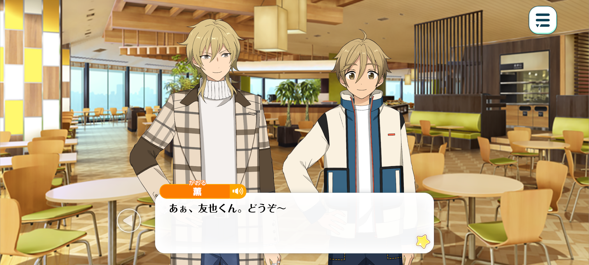
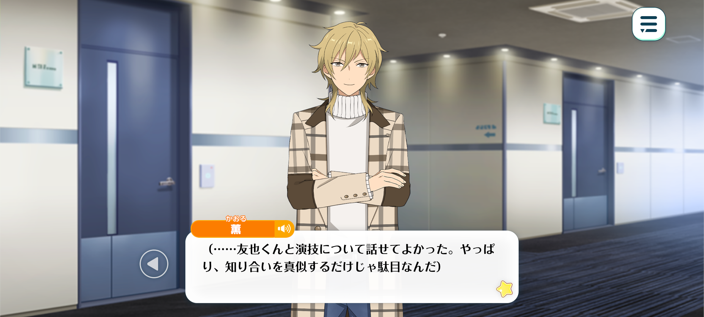
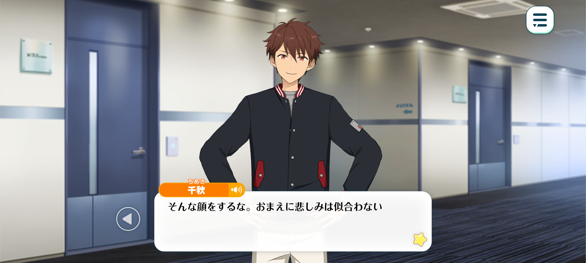

Scout! Scorpio's Venom
Capture Your Heart – Chapter 1


Season: Winter

Tomoya: Hello, Hakaze-senpai. Mind if I sit with you?
Kaoru: Oh, Tomoya-kun! Of course, go ahead~
None of the other Ra*bits kids are around today. Just you?
Tomoya: Yes. I just finished recording for a drama.
Kaoru: Another drama? Well, I suppose that's to be expected from such a sought-after actor~ ♪
Tomoya: Oh, no, not at all! I'm hardly popular. Someone else at my agency fell ill, so I ended up filling in for them.
It was just a nameless background role, really. I barely had any lines.
Kaoru: Hmm... How did you end up being the one to fill in?
I'd have thought even a newcomer could handle a role like that. Doesn't seem like something they'd need you for.
Tomoya: I actually volunteered. The staff at my agency were in a bit of a bind, and I thought it'd be a good opportunity to gain some experience.
Kaoru: Experience?
Tomoya: Things like learning how to direct people's attention while still blending into the scene. Having fewer lines gives you more room to work on those sorts of skills.
It's also a good chance to get the production staff to remember your face. Just because it's a small role doesn't mean it's not worth taking seriously.
...Ahaha, listen to me. I'm making myself sound awfully important, aren't I? Sorry about that.
Kaoru: Ahaha, don't worry about it.
...I see. I'd never really thought about it that way before.
I'm usually approached with offers for roles, so I don't get many chances to play smaller parts. I suppose I've never had reason to think about what you could get out of them.
You've given me something to think about, Tomoya-kun. Thanks~
Tomoya: Oh, it's nothing! But Hakaze-senpai, you're pretty sought-after yourself, aren't you?
Weren’t you in that tennis drama the other day?
Kaoru: Ahaha, you saw that? How embarrassing~.
Tomoya: Why? I thought you were really, really good! You were so cool playing such an energetic club captain!
Kaoru: You think so? Koga-kun saw me and said I was like a completely different person. He even laughed at me!
Tomoya: I'm sure he meant it as a compliment! Isn't that what acting's all about? Becoming someone completely different from yourself?
Kaoru: I see... You're sweet, Tomoya-kun.
People do point out things I could stand to improve, but they tend to praise me for even the most basic things, too. Makes it easy to get a little complacent.
Tomoya: It's not just me who thinks highly of you, you know! There are plenty of others who praise you. Anzu-san, for one.
Kaoru: Eh...? Anzu-chan?
Tomoya: Yep! Actually, while we were on break, Anzu-san and I watched your drama together in my dressing room.
When the role came up, you were the one Anzu-san recommended. Some of the staff were a little unsure about the casting at first, but...
She said she was sure you'd be able to pull it off.
Kaoru: R-really...? I see...
(I had no idea... Truthfully, I had my own doubts about whether I was right for the role. But if Anzu-chan thinks I can do it...)
(I wonder if Tomoya-kun knows why she recommended me. I'd love to hear more...)
(...Get a grip. It'll look pretty suspicious if I keep prying.)
Tomoya: Something the matter, Hakaze-senpai?
Kaoru: Oh, no, nothing at all!
Um... Since we're already talking about acting, could I ask you something?
There's a part in the role I'm playing where the character starts to lose confidence towards the end.
Tomoya: Oh, sure! I'd be happy to help.
Time: A short time later

Kaoru: (...I'm glad I asked Tomoya-kun about that. I guess it's not a good idea to base your performance too heavily on someone you know.)
(I'd been letting the club captain I was playing become too much like Moricchi. It was starting to throw me off.)
(But the performance went over well, and Tomoya-kun said he enjoyed watching it, too.)
(There's no point in simply imitating someone else. Especially when Anzu-chan went out of her way to recommend me...)
...
(...Why did she choose me, I wonder? What did she think of my performance?)
(I never did get around to asking Tomoya-kun... Well, if I'm this curious, I might as well ask her myself.)
(It's just work-related! Actors ask each other for feedback all the time. There's no reason to get embarrassed about it.)
(Hm? That voice... Anzu-chan—)
(...and Moricchi?)

Chiaki: —Hmm, so that day won't work? I guess there's only so much even Anzu can do...
Hey, don't look so down! A gloomy expression doesn't suit you!
...Ahaha! That's a line from my favourite hero show!
But I mean it, too! I don't want you worrying about this.
I'm just happy you gave it so much thought. Thanks, Anzu!
Kaoru: (Wh-what's going on here...? The atmosphere between them is... kind of nice?)
(I really want to know what they're talking about, but I can't exactly just walk up and interrupt them...)
(If I just back up and pretend I never saw them, I can just ask Anzu-chan another day—)
Chiaki: ...Hm?
Oh! Wait a minute! Isn't that Hakaze!
Kaoru: Oh god...